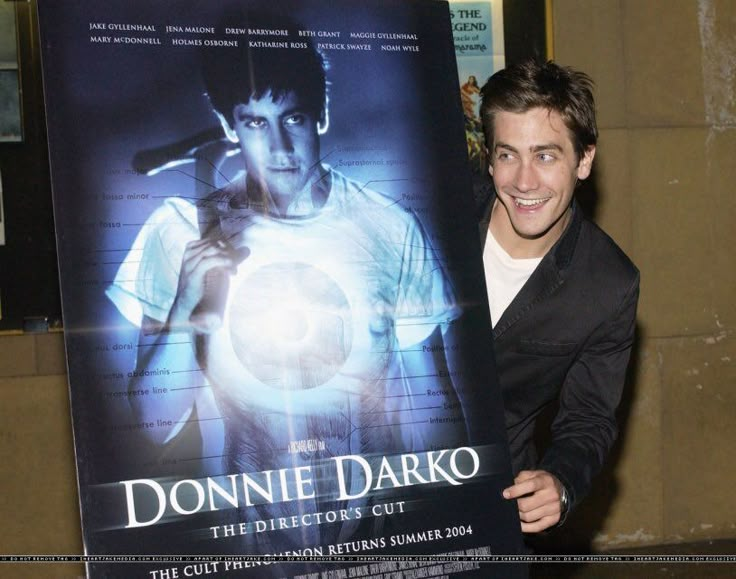

LA PRODUCCIÓN DE DONNIE DARKO
Una ópera prima arriesgada
*Donnie Darko* fue la ópera prima del director y guionista Richard Kelly, quien escribió el guion a los 24 años. A pesar de su complejidad temática y tono oscuro, el guion llamó la atención de Drew Barrymore, quien decidió producir la película a través de su compañía Flower Films. Esto fue clave para que el proyecto saliera adelante con un presupuesto ajustado de aproximadamente 4.5 millones de dólares.
Rodaje en tiempo récord
La película se filmó en tan solo 28 días —coincidiendo curiosamente con el mismo número de días en los que transcurre la historia dentro del universo ficticio—. El rodaje se llevó a cabo en California, principalmente en las ciudades de Long Beach y Santa Clarita. A pesar de las limitaciones presupuestarias, el equipo logró una atmósfera visual única gracias a la fotografía de Steven Poster.
El reparto: actores antes de ser famosos
Jake Gyllenhaal fue elegido para el papel principal cuando aún era relativamente desconocido. Su interpretación intensa e inquietante como Donnie marcó un punto de inflexión en su carrera. Junto a él participaron actores como Jena Malone, Mary McDonnell, Patrick Swayze y la propia Drew Barrymore. También participó Maggie Gyllenhaal, hermana de Jake, interpretando a su hermana en la ficción.
